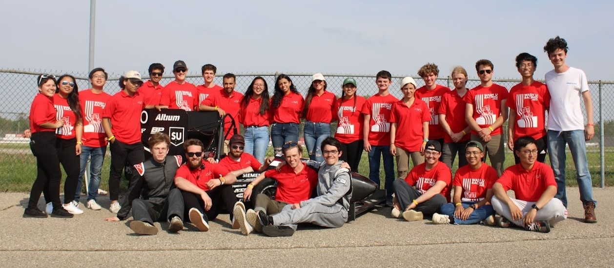

Formula Society of Automotive Engineers challenges students to conceive, design, fabricate, and compete with small formula-style racing cars.
Teams spend 8-12 months designing, building, and preparing their vehicles for a competition.
These cars are judged in a series of static and dynamic events, including technical inspection, cost, presentation, engineering design,
solo performance trials and high performance endurance.
Washington University in St. Louis competes in the June Formula SAE internal combustion competition against 119 other teams.
WUFR-22 //
2020-22 competition vehicle
The team undergoes a two year design build cycle while maintaining the university's COVID policies. The first year was dedicated to design,
almost entirely virtually as we did not have access to our garage.
Select System Leads:
President: Alex Levy, Daniel Luberda
Chassis: Emily Ma, Nisha Sahgal
Suspension: Jean-Paul Bermudez, Amay Kejriwal
Aerodynamics: Haowei Wu, Aiden Murphy
Skills/Software:
SolidWorks, MATLAB, manual machining, FEM, lug margin calculations, DFAM, technical drawings, GD&T, team communication, mentorship, teaching business major SolidWorks
